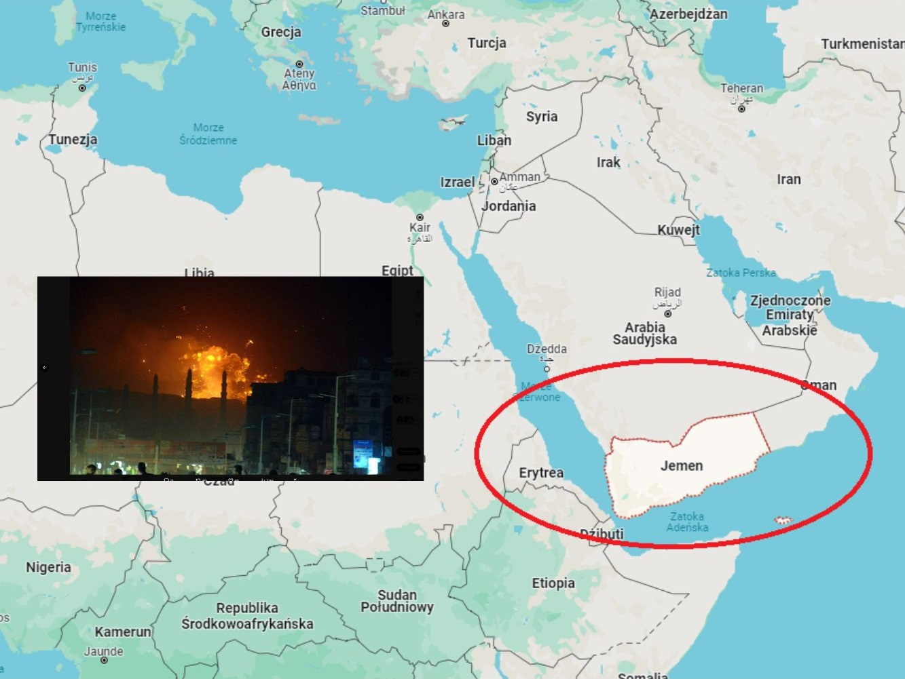

Tkaczyk News
SERWIS INFORMACYJNY
Konfilkt USA-Jemen, jak dalej toczy się ta wojna?
W sobotę 13 stycznia Stany Zjednoczone wraz z Wielką Brytanią i kilkoma innymi państwami ponownie przeprowadziły ataki na Jemen. Przedstawiciel Huti Abdul Kader al-Mortada poinformował na platformie X, że Amerykanie i Brytyjczycy przeprowadzili naloty na stolicę Jemenu Sanę, a także na miasta Al-Hudajda, Sada i Zamar. Zaatakowane zostały przede wszystkim wojskowe węzły logistyczne, systemy obrony powietrznej i miejsca składowania broni. Przywódca Hutii stwierdził, że amerykański atak doprowadzi do bardziej stanowczej reakcji. Jak sami słyszeliście ataki mają być prowadzone tylko i wyłącznie na statki płynące do Izraela oraz ewentualnie na te, które kontrolowane są przez Stany Zjednoczone. Problem polega jednak na tym, że nijak te słowa mają się do rzeczywistości, ponieważ atakowane były jednostki, których głównym kierunkiem wcale nie był Izrael - a kraje pod jakich banderą płynęły jak widzicie po flagach raczej tej izraelskiej nie przypominały. Co więcej według stanu na 1 stycznia 2024 r . zaatakowano dodatkowo co najmniej siedemnaście statków cywilnych, co tym bardziej obala tą teorię. Nie zmienia to jednak postaci rzeczy, że faktycznie ataki po stronie Huti nasiliły się od czasu zmasowanego ataku Izraela na Palestynę, po tym kiedy to palestyński hamas dokonał inwazji na terenach kontrolowanych przez Tel-Awiw. W operacji Prosperity Guardian czyli (Strażnik Dobrobytu) uczestniczą m.in. siły z Wielkiej Brytanii, Bahrajnu, Kanady, Francji, Włoch, Holandii, Norwegii, Seszeli i Hiszpanii. Jej celem jest zapewnienie bezpiecznej żeglugi po Morzu Czerwonym. Niemniej Włochy i Hiszpania, które były wcześniej wymieniane jako uczestnicy misji, opublikowały oświadczenia, z których wynika, że dystansują się od morskiej operacji USA na Morzu Czerwonym. Jak mówiła w TOK FM dr Magdalena Kumelska-Koniecko z Uniwersytetu Warmińsko-Mazurskiego w Olsztynie, taka strategia może być nieskuteczna. Cytując wypowiedź ,,Huti są przyzwyczajeni do takich ataków i raczej nie będą zmieniali swojej strategii”. Ćwiczą to od ośmiu lat. Dlatego zdaniem ekspertki, obecne działania USA wobec Huti mogą być niewystarczające, a inwazja lądowa na Jemen, która mogłaby rozwiązać ten problem, też nie wchodzi w grę, ponieważ to naraziłoby cały region na rozlanie się konfliktu. Warto napomnieć, że na bliskim wschodzie w dalszym ciągu wrze- Hezbollah w Libanie nie poszedł na noże z Izraelem, ale prawdopodobnie czeka na dogodny moment, do tego Irak jest zdestabilizowany i amerykanie tam także mają problemy, Iran oczywiście dostarcza broń do każdego z tych krajów i jednocześnie wie, że nikt nie zdecyduje się go zaatakować. Po trzech miesiącach konflikt nieprzerwanie trwa i nie możemy przewidzieć kiedy dokładnie się skończy. 9 marca USA zadeklarowało strącenie 15 dronów jemeńskich rebeliantów. Francja też miała swoje do powiedzenia i zestrzelili ich tego samego dnia 4. Dla państw zachodu zakończenie tego konfilktu byłoby naprawdę korzystne, lecz nie widać takiej możliwości.
28.02.2024, 8:24